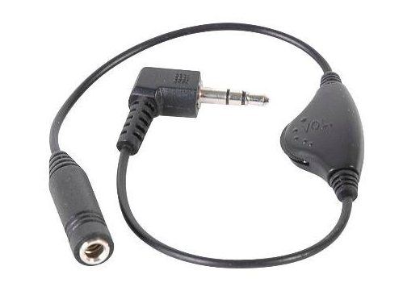

Modulation and signal conversion In this lab, we will explore a one-bit ON/OFF modulation technique known as Pulse Width Modulation (PWM). We will use this technique to convert a digital signal into an analog signal, so that we can deliver audio tones to the AMP2 Pmod. This module only accepts one input signal from the FPGA, but that signal is supposed to be analog, and the FPGA only produces digital signals. Methods like PWM allow us to emulate an analog level via fast digital switching.
For this lab, you will also need a pair of headphones. The PMod Amp2 module tends to produce a loud output, so you may also benefit from an analog inline volume control like this one (I found it on Amazon):

According to https://reference.digilentinc.com/reference/pmod/pmodamp2/start,
the pins are as shown on the right. Pin 1 is the “top” pin on the
circuit board, and is labeled with a 1. Ignore the
J1 label at the bottom of the
module, it is NOT a pin label.
The main pins are:

The AMP2 Pmod contains a passive low-pass filter. The word “passive” means that it consists only resistors and capacitors. The phrase “low-pass filter” means that it smooths out fast switching signals, leaving only the average signal value.
This animation illustrates the concept:
We can convey a signal by varying the pulse widths as long as the signal bandwidth is much lower than the pulse frequency. In other words, if the signal changes very slowly, so that the signal’s value is approximately constant during one or more pulse periods, then we can use the pulse widths as a carrier to convey the signal. The signal is then retrieved, and the carrier removed, by using a low-pass filter to reject the fast-changing pulses.
Applications of PWM:
In this lab, you will...
Since our PWM will modulate an 8-bit digital input named din, it must support 256 distinct pulse widths, ranging from 0 to 255. This means the PWM signal must have a pulse period of 256 clock cycles.
For each period of the PWM signal, the output sout should be HIGH during the first din clock cycles, and should fall LOW during the remainder of the 255 cycles that comprise the pulse period.
See if you can produce a module, in Verilog, with the indicated behavior. Create a testbench to verify your design.
Once you have created and verified a PWM module design, test it by making an LED dimmer, with the source shown below. This module uses a PWM signal to gradually brighten, then gradually dim all the LEDs on the Basys3 board. Study the module and make sure you understand how it works. Synthesize, implement, generate a bit stream and then demonstrate the design on your board.
`timescale 1ns / 1ps
module dim_leds(
input sys_clk,
output [15:0] LED,
output [3:0] an,
output [6:0] seg
);
// PWM signals
reg [7:0] din;
wire sout;
// Signals for clock divider:
integer count;
reg div_clk;
// State variable:
reg count_up; // brighten (1) or dim (0)
// Assign all LEDs to equal the PWM signal
assign LED = {16{sout}};
// Instantiate the PWM:
pwm_0 MOD1(
.clk(sys_clk),
.din(din),
.sout(sout)
);
// Initialize reg signals
initial begin
din = 0;
count = 0;
count_up = 1;
end
// Implement a clock divider:
always @(posedge sys_clk) begin
if (count >= 500_000) begin
count <= 0;
div_clk <= ~div_clk;
end
else
count <= count + 1;
end
// Main brighten/dim process:
always @(posedge div_clk) begin
// Adjust the PWM brightness level
if (count_up)
din <= din + 1;
else
din <= din - 1;
// If we've reach maximum brightness, start dimming.
// If we've reached minimum brightness, start brightening.
if ((count_up)&&(din == 254))
count_up <= 0;
else if ((~count_up)&&(din==1))
count_up <= 1;
end
endmoduleYou can generate an audio tone by sending the PWM signal directly to
the AMP2 Pmod’s AIN pin. The PWM
frequency corresponds to the pitch, and the PWM duty cycle corresponds
to the volume. A simple PWM audio modulator is implemented by two clock
dividers as shown below. The first clock divider sets the frequency
(i.e. the note) via a signal named f_clk. The the second divider is
controlled by f_clk, and sets
the duty cycle (i.e. the volume) in increments from 0 to 256.
module pwm_audio(
input clk,
input rst_n,
input [7:0] volume,
input [9:0] N,
output reg sout
);
reg [9:0] f_count; // counter for frequency synthesis
reg f_clk; // divided clock
reg [7:0] dc_count; // counter for duty cycle
initial begin
f_count = 0;
sout = 0;
f_clk = 0;
dc_count = 0;
end
// First clock divider sets the tone frequency:
always @(posedge clk, negedge rst_n) begin
if (!rst_n) begin
f_count = 0;
f_clk = 0;
end
else begin
if (f_count > 0) begin
f_count <= 0;
f_clk <= ~fclk);
end
else
f_count <= f_count + 1;
end
// Second clock divider sets the duty cycle:
always @(posedge f_clk, negedge rst_n) begin
if (!rst_n) begin
dc_count <= 0;
sout <= 0;
end
else begin
dc_count <= dc_count + 1;
if (dc_count < volume)
sout <= 1;
else
sout <= 0;
end
end
endmoduleThe note frequency is controlled by the first clock divider ratio, N. To determine the value of N for a particular note, we follow this procedure:
The factor of 256 in the
denominator allows for 256 clock cycles to control the duty cycle. This
equation produces fractional values which need to be rounded off. The
round-off error sometimes makes a note sound sharp or flat; for now,
we’ll have to live with that. A table of common musical notes, their
frequencies, and the associated divider values are shown below.
| N | sout frequency | closest note | note frequency |
|---|---|---|---|
| 747 | 261.46Hz | middle C | 261.63Hz |
| 665 | 293.70 | D | 293.66 |
| 593 | 329.36 | E | 329.63 |
| 559 | 349.40 | F | 349.23 |
| 498 | 392.19 | G | 392.00 |
| 444 | 439.89 | A | 440.00 |
| 395 | 494.46 | B | 493.88 |
| 373 | 523.63 | C | 523.25 |
To demonstrate the PWM audio module, create a top module with these specifications:
BtnC is resetBtnU, BtnR, BtnD, and BtnL are notes D, E, G and A,
respectively.N
is set to the appropriate frequency and sout is passed through to AIN on the AMP2.AIN is zero.Besides the PWM signal, the Amp2 module needs two additional signals:
We can set both of these outputs to 1.
The PMod signals sout, gain and shutdown_l all need to be mapped to the correct header I/O positions. I recommend plugging your AMP2 module into header JA. Then the corresponding constraint settings are:
##Pmod Header JA
##Sch name = JA1
set_property PACKAGE_PIN J1 [get_ports {sout}]
set_property IOSTANDARD LVCMOS33 [get_ports {sout}]
#Sch name = JA2
set_property PACKAGE_PIN L2 [get_ports {gain}]
set_property IOSTANDARD LVCMOS33 [get_ports {gain}]
#Sch name = JA3
#set_property PACKAGE_PIN J2 [get_ports {JA[2]}]
#set_property IOSTANDARD LVCMOS33 [get_ports {JA[2]}]
#Sch name = JA4
set_property PACKAGE_PIN G2 [get_ports {shutdown_l}]
set_property IOSTANDARD LVCMOS33 [get_ports {shutdown_l}]
#Sch name = JA7
#set_property PACKAGE_PIN H1 [get_ports {JA[4]}]
#set_property IOSTANDARD LVCMOS33 [get_ports {JA[4]}]
##Sch name = JA8
#set_property PACKAGE_PIN K2 [get_ports {JA[5]}]
#set_property IOSTANDARD LVCMOS33 [get_ports {JA[5]}]
##Sch name = JA9
#set_property PACKAGE_PIN H2 [get_ports {JA[6]}]
#set_property IOSTANDARD LVCMOS33 [get_ports {JA[6]}]
##Sch name = JA10
#set_property PACKAGE_PIN G3 [get_ports {JA[7]}]
#set_property IOSTANDARD LVCMOS33 [get_ports {JA[7]}]Plug the module into header JA, on the top row, and make sure the labels on pin “1” are matched between the module and Basys3.

Then run Synthesis and Implementation, and try to resolve and error messages or critical warnings that occur.
Finally, generate the bitstream, plug in the AMP2 module, program the board, and listen for tones while you alter the switch settings.